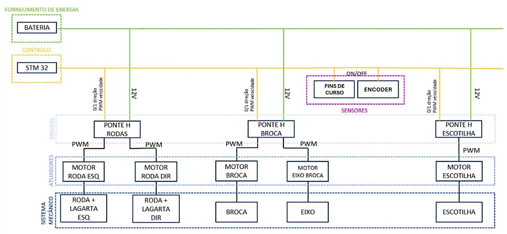

A versão final do AGROBOT.
Projeto Integrador 2
Controlo Digital
Unidade curricular
Projeto Integrador em EEIC 2
Ano
3.º ano, 2.º semestre · 2024/25
Equipa
4 elementos e orientador
A versão final do AGROBOT.
Este projeto retoma o AGROBOT do semestre anterior: robô agrícola de pequena escala que automatiza a sementeira.
Na evolução deste projeto implementámos o controlo digital com a utilização de um microcontrolador STM32H755ZI-Q. O resultado é um sistema mais robusto, mais preciso e mais fácil de modificar
Adicionalmente, elaborou-se um GRAFCET para descrever o ciclo como uma máquina de estados formal, com entradas e saídas.
Demonstração do funcionamento em laboratório.

Arquitetura do sistema.